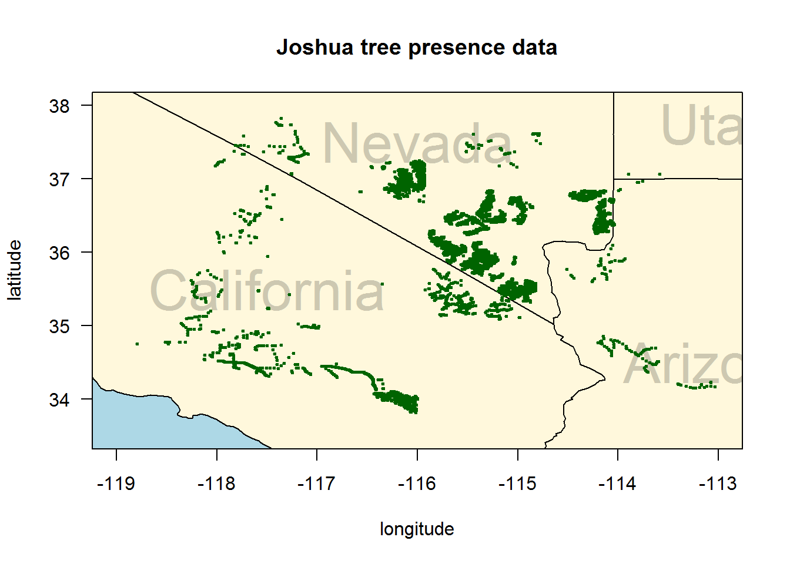
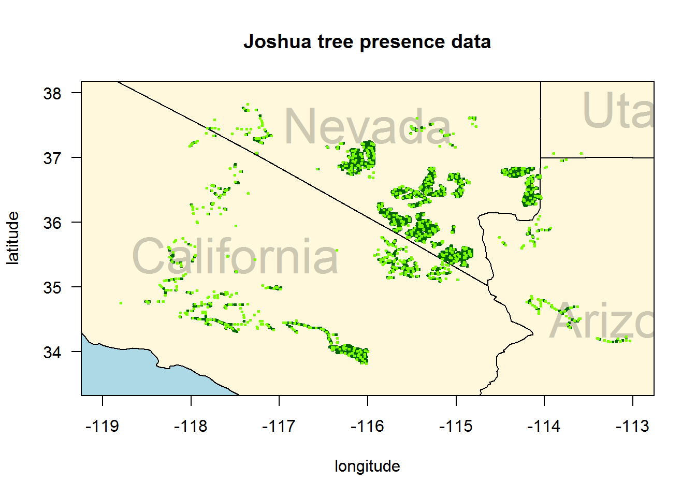
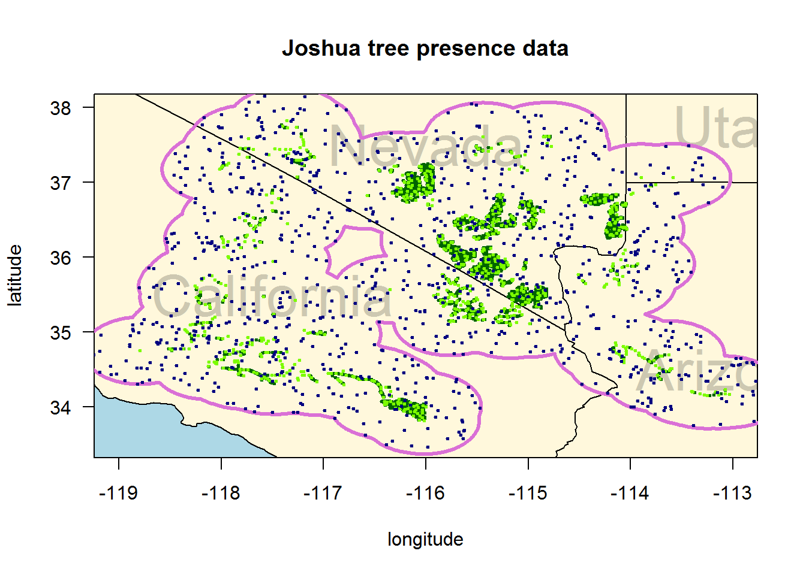
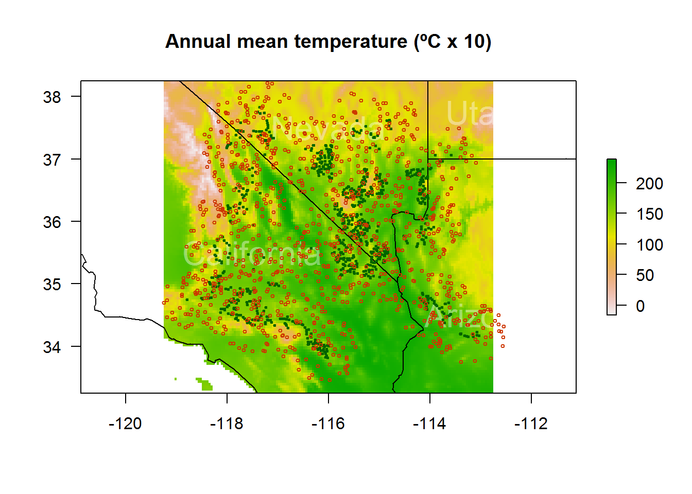
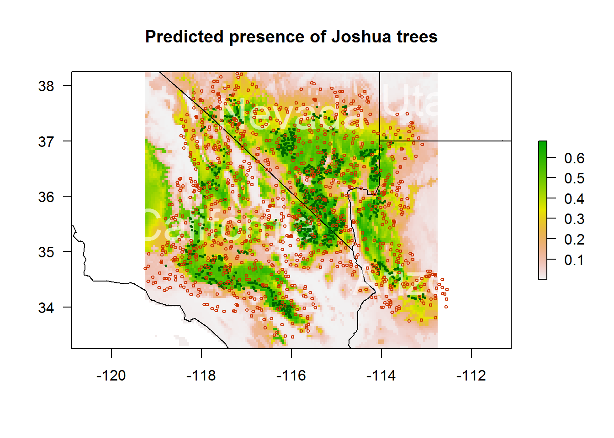

Main Steps to Complete an SDM
Step 1: Data Preparation
- Most time consuming part of SDMs!!
- Collect sufficient number of records for occurrence
- Presence, absence, or less often, abundance
- Clean up data!
- Does the data make sense for your species?
- Do the data points have coordinates? Are they accurate?
- Get rid of duplicate records
- Predictor variables: environmental data
- Must be accurate and relevant to your study
- Appropriate spatial resolution (e.g., if you are investigating a variable at a global scale, a 1-m resolution doesn’t make much sense!)
Be aware of sampling bias!
- Presence only data
- Surveys may have only been done at easily accessible areas close to roads
- Intense sampling of certain areas
- These may cause your model to show low suitability in certain areas- but that could just be because of a lack of sampling in those areas!
- No absence data?
- Subsampling to reduce unevenness (e.g., break study area up into grid cells and choose one point to represent each grid cell)
- Potential problems with subsampling
- Eliminating records of rare or endangered species that may not have a lot of data points to begin with
- Records may be clumped for a reason. We may assume this is sampling bias, but it could have to do with the ecology of the species!
- Does lack of presence mean absence?
- Detection issues
- Knowledge of your study species! (e.g., does your species hibernate? estivate? migrate?)
Example: Estimating Absence from Presence
- Atlantic cod (Ecological Modelling, 2016)
- Uses presence of other species that Atlantic cod are known to not occur sympatrically with to determine true absence
- 1.7 million occurrences of 280 marine species in GBIF
- This example is done globally, but can be scaled to regional studies
Moral of the Story: If you have absence data…. USE IT!!
Step 2: Fitting a model
Which model?
- Profile methods
- Use environmental distance to known stes and simple statistics
- BIOCLIM and DOMAIN have low performance and stability
- Regression methods
- Generalized linear models, generalized additive models
- Machine learning methods
- MAXENT
- Random Forest
- Boosted Regression
Step 3: Predictions
- Predict function in R
- This will take variables you have and apply them to a different space
- Any type of model can be used
Step 4: Evaluating the Results
- Ask yourself…
- Does the model seem sensible ecologically?
- Do the predictions seem reasonable?
- Spatial Cross-validation
- Interpolation: use ‘training’ model to test with known occurrence data set across different regions
- Example: Fitting pygmy rabbit presence-only model from Hart-Sheldon to occurrence data at two other regions- Elko and Austin
- If our training model for Hart-Sheldon doesn’t fit Elko and Austin occurrence data well it could mean it is an overfit model
Area Under the Curve (AUC) in Evaluating the Results
- Measure of accuracy
- 0.5 AUC = as good as a random guess
- Closer AUC is to 1, the better the model is!
- Criticism: Increased spatial extent of background points leads to an increased AUC value
- Remove “spatial sorting bias” through “point-wise distance sampling”
- Example:
> sb <- ssb(pres_test, back_test, pres_train)
> sb[,1] / sb[,2] #this equation is used to assess if spatial sorting bias is affecting our data
p 0.06743079
- This value is close to 0 which means there is a strong spatial bias
> i <- pwdSample(pres_test, back_test, pres_train, n=1, tr=0.1) #point-wise distance sampling
> pres_test_pwd <- pres_test[!is.na(i[,1]), ]
> back_test_pwd <- back_test[na.omit(as.vector(i)), ]
> sb2 <- ssb(pres_test_pwd, back_test_pwd, pres_train)
> sb2[1]/ sb2[2]
[1] 1.013039
- This value is much better! A value closer to 1 means there is no spatial bias
> bc <- bioclim(predictors, pres_train)
> evaluate(bc, p=pres_test, a=back_test, x=predictors) #evaluate data without correction for spatial sorting bias
# cut out all results except AUC
AUC : 0.7551724
> evaluate(bc, p=pres_test_pwd, a=back_test_pwd, x=predictors) #evaluate data with correction for spatial sorting bias
# cut out all results except AUC
AUC : 0.4467456
- We see that the correction for the spatial sampling bias lowered the AUC value by approximately 0.3
Correlative versus Mechanistic SDMs
- Correlative
- Applies environmental conditions to occurrence records
- Realized niche: habitat & resources a population actually uses
- Requires relatively little knowledge of focal organism
- Mechanistic
- Incorporates physiology, morphology, and behavior of organism
- Fundamental niche: habitat & resources a population is theoretically capable of using under ideal conditions
- Requires a significant increase in invested time, effort, resources, data, and knowledge of focal organism
- Joint approach
- Would allow one to map the fundamental niche of a given organism and then find the realized niche, or areas of higher habitat suitability, within the area of the fundamental niche
- Example
- Kearney & Porter (2009) Mechanistic niche modelling: combining physiological and spatial data to predit species’ ranges
- Invasive Cane Toads in Australia
Future Advances for SDMs
- Inclusion of species interactions
- More complex, mechanistic models
- Especially for the spread of invasive species
- How species will respond to novel environmental conditions
- Community shifts
- New competitors and predators
- Movement
- Dispersal and Migration
- Gene flow between populations
Getting started on the example in R!!
Make sure you have all of the correct packages installed and ready using library() or require().
# install.packages("raster")
# #includes "sp"
# install.packages("rgdal")
# install.packages("dismo")
# install.packages("rJava")
library(rgdal)
library(raster)
library(rJava)
^These are what are suggested through the cran vignette, but you will evaluate what you would need. we are going to focus on what can be done in dismo. You might even have your own background maps you would be using, but for our example will we need these map packages.
# install.packages("maptools")
require(maptools)
# install.packages("maps")
# install.packages("mapdata")
require(mapdata)
# install.packages("rgeos")
require(maps)
## Loading required package: maps
## Warning: package 'maps' was built under R version 3.3.2
library(rgeos)
## Warning: package 'rgeos' was built under R version 3.3.2
## rgeos version: 0.3-21, (SVN revision 540)
## GEOS runtime version: 3.5.0-CAPI-1.9.0 r4084
## Linking to sp version: 1.2-3
## Polygon checking: TRUE
library(dismo)
## Warning: package 'dismo' was built under R version 3.3.2
## Loading required package: raster
## Loading required package: sp
Our example is being borrowed from
Godsoe, W., Strand, E., Smith, C. I., Yoder, J. B., Esque, T. C., & Pellmyr, O. (2009). Divergence in an obligate mutualism is not explained by divergent climatic factors. New Phytologist, 183(3), 589-599.
It is Dr. Jeremy Yoder who provides code that we have modified to show you at http://www.molecularecologist.com/2013/04/species-distribution-models-in-r/. You will need to download the data from dryad at http://datadryad.org/resource/doi:10.5061/dryad.6s67t. It contains latitude and longitude coordinates in decimal degrees for 5,765 points for observations of Joshua tree (Yucca brevifolia), and the species of pollinator moth (Tegeticula synthetica or T. antithetica) present at those sites. Then in r we will load our data and our map (we are working in the US).
#load table of coordinates
locs <- read.delim("JoTrPresence02202008_dryad.txt")
data(stateMapEnv) # load the database with the U.S. states
Now we’re ready
#we will now check the data by plotting it on this map
# notice we're limiting the extent of the map to focus on the Mojave Desert region
plot(c(-119, -113), c(33.5, 38), mar=par("mar"), xlab="longitude", ylab="latitude", xaxt="n", yaxt="n", type="n", main="Joshua tree presence data")
#rect draws a rectangle
rect(par("usr")[1],par("usr")[3],par("usr")[2],par("usr")[4], col="lightblue")
map("state", xlim=c(-119, -113), ylim=c(33.5, 38), fill=T, col="cornsilk", add=T)
#we can label the states
text(x=-117.5, y=35.5, "California", col="cornsilk3", cex=3)
text(x=-116, y=37.5, "Nevada", col="cornsilk3", cex=3)
text(x=-113, y=34.5, "Arizona", col="cornsilk3", cex=3)
text(x=-113, y=37.75, "Utah", col="cornsilk3", cex=3)
#now add the points
points(locs$longitude, locs$latitude, col="darkgreen", pch=20, cex=0.5)
axis(1,las=1)
axis(2,las=1)
box()

This is a map of our raw points. You can see some clumping, there is not even distribution. Why? Partially because Joshua trees aren’t evenly distributed, but also because sampling efforts aren’t evenly distrbuted. How do we compensate for this? ### Subsetting! We can divide the map up into a grid and randomly draw a single point from each grid square. We will use 5 kilometer squares, but be careful that is is crude at this scale and if you were looking at the whole globe accurate calculations are complicated because the Earth is not flat.
#subsetting
# create sequences of latitude and longitude values to define the grid
longrid = seq(-119,-113,0.05)
latgrid = seq(33.5,38,0.05)
# identify points within each grid cell, draw one at random
subs = c()
for(i in 1:(length(longrid)-1)){
for(j in 1:(length(latgrid)-1)){
gridsq = subset(locs, latitude > latgrid[j] & latitude <
latgrid[j+1] & longitude > longrid[i] & longitude <
longrid[i+1])
if(dim(gridsq)[1]>0){subs = rbind(subs, gridsq[sample(1:dim(gridsq)[1],1 ), ])}}}
dim(subs) # confirm that you have a smaller dataset than you started with
## [1] 812 3
#yes, there are now three variables and only 812 obs of 5765

Okay, this looks good, but let’s reevaluate presence vs true absence. We don’t have absences, so we need to define points in regions where Joshua trees aren’t found. We want something informative (ie it’s not informative to identify the arctic circle in this model). In this case we will define a region that current observed trees could disperse to, but haven’t yet.
# define circles with a radius of 50 km around the subsampled points
x = circles(subs[,c("longitude","latitude")], d=50000, lonlat=T)
# draw random points that must fall within the circles in object x
#sp is sample point locations with an area
bg = spsample(x@polygons, 1000, type='random', iter=1000)
#explain at polygons vs spatialpixels, line etc and 'random' vs fibonacci
plot(x, border="orchid",lwd=3)
plot(bg, col="navyblue",shape="circle",add=TRUE,pch=20, cex=0.5)

This is showing our Joshua tree presences and the pseudo-absences
Adding climate data
The raster package allows for us to download from Bioclim, an open-source climate dataset from 1950 to 2000. You can extract by different spatial resolutions. Takes a lot of memory, so you could choose a specific location to save the data if you didn’t want it in your current working directory with path=“data/”.
BClim = getData("worldclim", var="bio", res=2.5)
YbrevRange = extent(-119.25,-112.75,33.25,38.25) # define the extent
#Then crop the Bioclim data. Could save this to be reused in a future session with writeRaster().
BClim = crop(BClim, YbrevRange)
#now we have managable dataset, easier to plot
# this format plots the first (of 19) variables stored in BClim; change the 1 to 2-19 for the others
plot(BClim, 1, cex=0.5, legend=T, mar=par("mar"), xaxt="n", yaxt="n", main="Annual mean temperature (ºC x 10)")
map("state", xlim=c(-119, -113), ylim=c(33.5, 38), fill=F, col="black", add=T)
#we can label the states again
text(x=-117.5, y=35.5, "California", col=rgb(1,1,1,0.4), cex=2)
text(x=-116, y=37.5, "Nevada", col=rgb(1,1,1,0.4), cex=2)
text(x=-113, y=34.5, "Arizona", col=rgb(1,1,1,0.4), cex=2)
text(x=-113, y=37.75, "Utah", col=rgb(1,1,1,0.4), cex=2)
#add the presence points again
points(subs$longitude, subs$latitude, col="darkgreen", pch=20, cex=0.5)
#and the pseudo-absence points
points(bg, cex=0.5, col="orangered3")
# add axes
axis(1,las=1)
axis(2,las=1)
box()

This is pretty to look at, but we want to do analysis.
#To actually extract the values for each of the 19 Bioclim variables, we just use the extract() function:
# pulling bioclim values
Ybrev_bc = extract(BClim, subs[,c("longitude","latitude")]) # for the subsampled presence points
bg_bc = extract(BClim, bg) # for the pseudo-absence points
#build datagrames, these will have two columns for coordinates and 19 climate variables
Ybrev_bc = data.frame(lon=subs$longitude, lat=subs$latitude, Ybrev_bc)
#and again for pseudo-absences
bgpoints = bg@coords
colnames(bgpoints) = c("lon","lat")
bg_bc = data.frame(cbind(bgpoints,bg_bc))
length(which(is.na(bg_bc$bio1))) # double-check for missing data
## [1] 8
bg_bc = bg_bc[!is.na(bg_bc$bio1), ] # and pull out the missing lines
group_p = kfold(Ybrev_bc, 5) # vector of group assignments splitting the Ybrev_bc into 5 groups
group_a = kfold(bg_bc, 5) # ditto for bg_bc
#we defined 5 groups so now we will choose one to use for our validating set-aside
test = 3
#Then we use test and the kfold groupings to divide the presence and absence points:
train_p = Ybrev_bc[group_p!=test, c("lon","lat")]
train_a = bg_bc[group_a!=test, c("lon","lat")]
test_p = Ybrev_bc[group_p==test, c("lon","lat")]
test_a = bg_bc[group_a==test, c("lon","lat")]
What did we just do?
To estimate the effectiveness of a predictive model, it’s common practice to set aside part of the dataset to validate the model. We’ll estimate the model from the total dataset minus the set-aside, then check the model’s ability to correctly identify the points in the set-aside as presences or absences. If we then re-divide the data, then re-estimate the model, then re-validate, we can begin to get a sense for how effective a given method is at estimating the SDM. For this purpose, the function kfold() creates a vector of values you can use to break your data into k groups of equal size, each of which can be used as the set-aside for testing over several iterations of this validation cycle. ## Species distribution model Okay, so you think you can dance. Well, you need to get Java. You will need to manually choose other versions of Java and get 64-bit. THEN, you may have to fool around in regedit.exe and make a key called Prefs under JavaSoft. Or or if that is already there(looks like a folder) right click and give full control in permissions. Once that is all in place you can use dismo for the maxent function in dismo for the maximum entropy and rJava so r and Java can talk to each other without us having to use the MAXENT window directly.
me = maxent(BClim, p=train_p, a=train_a)
## Loading required namespace: rJava
#now evaluate the model
e = evaluate(test_p, test_a, me, BClim)
e
## class : ModelEvaluation
## n presences : 162
## n absences : 198
## AUC : 0.831494
## cor : 0.561277
## max TPR+TNR at : 0.3748659
You will notice in these statistics is the AUC, area under curve. So how good is this model at labeling a geographic point as either a presence or an absence? Well an AUC of 0.5 would be no better than a coin flip. Ours is better than that, but we would want a higher number for publication of our SDM. We could use different portions of the total model for validation, we could alter our selections of pseudo-absence points, or the range of climate variables we use. Right now, this is good enough for me. Since I’m a happy mama, we will move on to visualizing the predictions from our model. # Estimate predicted probabilities
## Visualize these predictions from the model by cell
pred_me = predict(me, BClim) # generate the predictions
# make a nice plot
plot(pred_me, 1, cex=0.5, legend=T, mar=par("mar"), xaxt="n", yaxt="n", main="Predicted presence of Joshua trees")
map("state", xlim=c(-119, -113), ylim=c(33.5, 38), fill=F, col="black", add=T)
# state names
text(x=-117.5, y=35.5, "California", col=rgb(1,1,1,0.6), cex=3)
text(x=-116, y=37.5, "Nevada", col=rgb(1,1,1,0.6), cex=3)
text(x=-113, y=34.5, "Arizona", col=rgb(1,1,1,0.6), cex=3)
text(x=-113, y=37.75, "Utah", col=rgb(1,1,1,0.6), cex=3)
#presence
points(subs$longitude, subs$latitude, col="darkgreen", pch=20, cex=0.5)
#and the pseudo-absence points
points(bg, cex=0.5, col="orangered3")
axis(1,las=1)
axis(2,las=1)
box()

Remember, the shading is not percipitation this time, but probabilities! This is just a basic run through to play with that I hope you enjoy. Happy modeling! :)